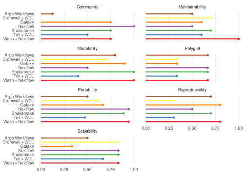

10 Quality Assessment of Workflow Frameworks
Given the abovementioned limitations, we decided to conduct our own quality assessment of workflow frameworks. This assessment is still largely in the works, but we’re happy to share the preliminary results with you.
The data is based on a review of the documentation and community resources for each framework. We evaluated the frameworks based on the list of essential qualities mentioned in the previous section (Figure 9.1).
10.1 Included frameworks
The following workflow frameworks were included in the assessment:
- Nextflow: A domain-specific language for creating scalable and reproducible data analysis pipelines.
- Snakemake: A workflow management system that uses Python-based rules to define dependencies and execute tasks.
- Galaxy: A web-based platform for creating, running, and sharing data analysis workflows without the need for programming expertise.
- Viash + Nextflow: A combination of Viash, a tool for defining bioinformatics workflow components, and Nextflow for scalable and reproducible execution.
- Argo Workflows: A Kubernetes-native workflow engine for orchestrating containerized tasks and automating complex workflows.
10.2 Quality Assessment Criteria
The quality assessment was based on the following criteria:
Does a library of components exist?
- A library of OSS components is available
- Community repository has frequent commits
- Community repository has > 10 frequent non-employee commitors
- Are there repositories of OSS workflows available?
How easy is it to update, modify, and troubleshoot workflows?
- Workflows are well-structured and easy to understand.
- Framework supports documenting the interfaces of components and workflows
- Version control and collaboration features facilitate team-based development.
- Components can be unit tested
- Documentation specifies how to unit test components
How effectively does the framework promote modular design and reusability?
- Software can be easily encapsulated as a modular component.
- Components have well-defined inputs and outputs.
- Components can be shared and reused across different workflows.
- The framework supports dependency management
- The framework supports versioning of components.
Is it easy to switch between different programming / scripting language within one workflow?
- Calling a script from another language is possible
- Components can be written in multiple languages and communicate via a file-based interface
- Components can be written in multiple languages and communicate via an in-memory data channel
Support for various compute platforms
- Support for AWS Batch
- Support for Azure Batch
- Support for Google Cloud
- Support for Kubernetes
- Support for Local execution
- Support for PBS/Torque
- Support for SLURM
- Support for additional compute platforms
Support for various containerization technologies
- Support for Apptainer
- Support for Docker
- Support for Podman
- Support for additional containerization technologies
Support for various storage solutions
- AWS S3
- Azure Blob Storage / Files
- Google Storage
- HTTPS
- FTP
- Support for additional storage solutions
How effectively does the framework ensure reproducibility of results?
- Individual components can list their software dependencies
- Per-component containerisation is supported
- Extending images with additional dependencies is supported
- Data provenance tracking is built-in or can be easily integrated.
- Framework promotes versioned releases of the workflow software and images to ensure reproducibility
How well does the framework handle large and complex workflows?
- The framework supports asynchronous and distributed execution.
- Resource management and optimization features are available.
- Performance monitoring and profiling tools are provided.
These criteria and subsequent scores will be further refined and validated as part of our ongoing research.
10.3 Quality Scores
The aggregated quality scores for each framework are shown below. The scores are based on the evaluation of the essential qualities of a production-ready workflow.
Raw scores and detailed explanations behind the reasoning of the resulting scores can be found in the Workflow Quality Assessment Spreadsheet.
10.4 Quality assessment contributors
- Jakub Majerčík
- Michaela Müller
- Robrecht Cannoodt
- Toni Verbeiren